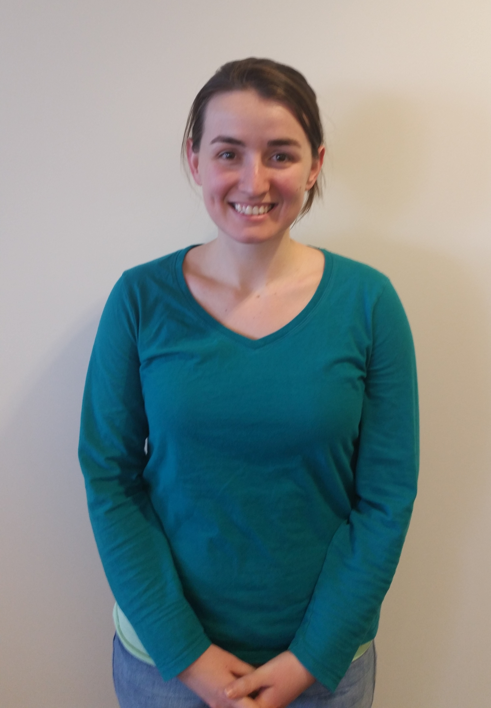

Andrew Jaffe
Investigator
Lieber Institute for Brain Development
Assistant Professor
Department of Mental Health
Johns Hopkins Bloomberg School of Public Health
Contact | CV
Leonardo Collado-Torres
PhD Student
Department of Biostatistics
Johns Hopkins Bloomberg School of Public Health
Personal Webpage
 Nikolay Ivanov
Nikolay Ivanov
Research Associate
Lieber Institute for Brain Development

Amanda Price
PhD Student
Human Genetics Program
Institute of Genetic Medicine